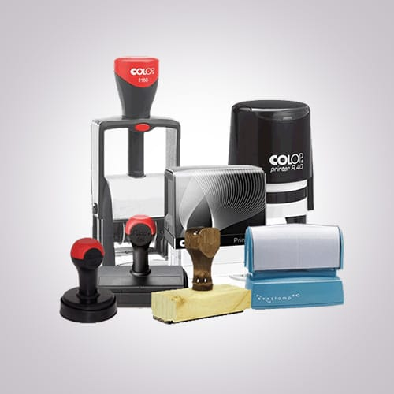
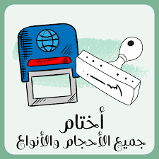

نقدّم أختام عالية الجودة تساعدك في توثيق أعمالك وتضيف لمسة رسمية وأنيقة.
 تصفح الموقع لمعرفة المزيد عن منتجاتنا
الأختام وسيلة قديمة وحديثة في نفس الوقت لإثبات الهوية والمصداقية. فهي ليست مجرد أداة تطبع شكلاً على الورق، بل تعتبر رمزاً للثقة والاعتماد.
منذ العصور القديمة، استخدم الملوك والتجار الأختام لإثبات صحة الرسائل والمعاملات، وما زالت الأختام إلى اليوم تحتل مكانة مهمة في عالم الأعمال والإدارة.
الأختام ليست مجرد شكل زخرفي، بل أداة ضرورية لإدارة الأعمال وحماية الحقوق. ومع تطور التكنولوجيا، ظهرت الأختام الرقمية بجانب الأختام التقليدية لتواكب العصر وتضمن الأمان في المعاملات الإلكترونية.